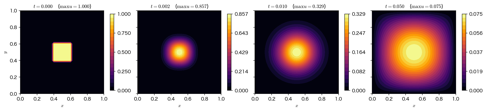
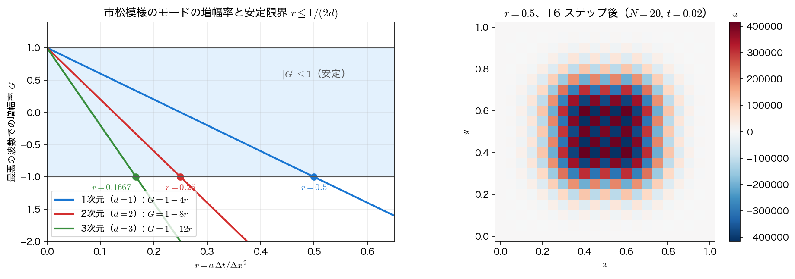

2次元の陽解法
第9回の FTCS を2次元に持ち上げる。式の上ではほとんど何も起きない——それでいて、安定条件は半分に、計算量は桁違いになる。本ページでは「何が変わらず、何が変わるのか」をはっきりさせる。
5点差分と2次元 FTCS
2次元拡散方程式
の右辺を、各方向に2階中心差分を当てて離散化する。\(\Delta x=\Delta y=h\) とすれば
で、足し合わせると第10回の5点ステンシルがそのまま現れる。
第10回ではこれを \(-\nabla^2u=f\) の左辺に使って巨大な連立1次方程式にした。今回は右辺、つまり時間微分を駆動する項として使う。時間に前進差分を当てれば
これが2次元の FTCS である。1次元との違いは、括弧の中に項が2つ増えて \(-2u\) が \(-4u\) になっただけである。実装も二重ループが三重ループになるだけで、第9回のコードとほとんど区別がつかない。

増幅率：波数が2つになる
第9回のフォン・ノイマン安定性解析を2次元に拡張する。格子上の波は \(x\) 方向と \(y\) 方向の位相を別々に持つので
とおく。\(\theta_x,\theta_y\in[-\pi,\pi]\) が格子上で表現できる全波数の範囲である。更新式に代入し、\(e^{\mathrm{i}\theta}+e^{-\mathrm{i}\theta}-2=-4\sin^2(\theta/2)\) を使うと
を得る。1次元の \(G=1-4r\sin^2(\theta/2)\) に、もう1方向ぶんの減衰項が加わった形である。
\(G\le1\) は常に成り立つので、危ないのは下側だけである。\(\sin^2\) が最大値 \(1\) を取るのは \(\theta_x=\theta_y=\pi\)、すなわち縦にも横にも1格子ごとに符号が反転する市松模様（checkerboard mode）で、このとき
\(\lvert G\rvert\le1\) を要求すれば \(1-8r\ge-1\)、すなわち
1次元の限界 \(r\le1/2\) のちょうど半分である。同じ議論を \(d\) 次元でやれば、最悪の場合の増幅率は \(G_{\min}=1-4rd\) となるので
となる（演習1で3次元まで実験する）。次元が上がるほど、同じ格子幅でも時間刻みを小さくしなければならない。
なお \(\theta_x=\theta_y=\pi\) ちょうどのモードは、各辺を \(N\) 等分したディリクレ境界の系には実際には存在しない。第9回で述べたとおり、存在する位相は \(\theta_k=k\pi/N\) に限られるので、厳密な限界は \(r\le1/\bigl(2d\cos^2\frac{\pi}{2N}\bigr)\) で、\(1/(2d)\) よりごくわずかに大きい（\(d=2,\ N=20\) で \(0.2515\)）。\(N\to\infty\) で \(1/(2d)\) に収束するので、以下では \(r\le1/(2d)\) を安定条件として扱う。

最大値原理から見ると同じ条件
増幅率を経由しなくても、同じ答えが出る。更新式を係数でまとめ直すと
5つの係数の和は \((1-4r)+4r=1\) である。したがってすべての係数が非負であれば、これは5点の重み付き平均になる。平均は元の5つの値の最小と最大の間に入るから、
が成り立ち、新しい極大・極小は生まれない。連続の拡散方程式が持つ最大値原理（maximum principle）が離散版でも保たれる、ということである。非負性が破れるのは中央の係数だけで、条件は
——フォン・ノイマン解析と完全に一致した。\(d\) 次元では中央の係数が \(1-2dr\) なので \(r\le1/(2d)\) で、これも一致する。
この見方には実用上の利点がある。厳密解を知らなくても破綻を判定できることである。例題2の初期値は \(0\le u\le1\)、境界値は \(0\) だから、真の解は以後も決して \([0,1]\) を出ない。\(\max u>1\) や \(\min u<0\) が観測されたら、それだけで手法が壊れている証拠になる。実行結果の表で判定に使っているのはこの基準である。
2つの解析はいつも一致するとは限らない
フォン・ノイマン解析は「振幅が増えないこと」、最大値原理は「新しい極値が生まれないこと」を要求しており、要求の強さは本来違う。今回たまたま両者が一致したのは、5点差分の固有ベクトルが正弦波で、対応する固有値の並びが素直だからである。一般には最大値原理のほうが強い条件になることが多い。次ページの ADI がその例で、無条件安定（\(\lvert G\rvert\le1\)）なのに \(\min u<0\) が出る。
次元の呪い
安定条件 \(\Delta t\le h^2/(2d\alpha)\) と未知数の個数 \(\sim N^d\) を組み合わせると、多次元計算の厳しさが数字になる。時刻 \(T\) まで解くのに必要なステップ数は
で、1ステップあたり \(N^d\) 個の格子点を更新するから、総仕事量は
に比例する。\(N\) を2倍細かくすると、2次元では \(2^4=16\) 倍、3次元では \(2^5=32\) 倍の計算量になる。\(N=100\) で \(t=0.05\) まで解く場合を並べると次のようになる（実行結果の (3)）。
| 次元 | 内部の未知数 | 安定限界 \(\Delta t\) | ステップ数 | 格子点更新回数 |
|---|---|---|---|---|
| 1D | \(9.9\times10^{1}\) | \(5.00\times10^{-5}\) | 1000 | \(9.9\times10^{4}\) |
| 2D | \(9.8\times10^{3}\) | \(2.50\times10^{-5}\) | 2000 | \(2.0\times10^{7}\) |
| 3D | \(9.7\times10^{5}\) | \(1.67\times10^{-5}\) | 3000 | \(2.9\times10^{9}\) |
1次元から3次元へ行くだけで、同じ精度・同じ終端時刻の計算が3万倍重くなる。しかもこれは \(N=100\)（3次元では1辺100点＝かなり粗い格子）での話である。実用的な計算がなぜ「とりあえず陽解法で」では済まないのか、その理由の半分はこの表にある。
残る半分は、この増加の内訳が未知数の増加（\(N^d\)）と時間刻みの制約（\(N^2\)）の掛け算だということである。未知数の増加は次元の呪いそのもので避けようがないが、\(N^2\) のほうは手法を変えれば回避できる——それが次ページの陰解法・ADI である。
サンプルコード
安定条件を例題2で、空間2次精度を例題1で確かめ、最後に次元ごとの規模を見積もる。
格子点が領域に入っているかを浮動小数点で判定しない
初期条件の「\(0.4\leq x\leq0.6\) なら \(u=1\)」を、そのまま x >= 0.4 && x <= 0.6 と書いてはいけない。\(x=i\Delta x\) を i*(1.0/N) で作ると、\(N=20\) のとき \(i=12\) で 0.6000000000000001 になり、上端の1列が黙って落ちる。塊は \(5\times5\) ではなく \(4\times4\) になり、中心も \(0.5\) から \(0.475\) にずれる。エラーは出ず、結果だけが少し違う——いちばん見つけにくい種類の誤りである。格子番号のまま \(2N/5\leq i\leq 3N/5\) と整数で判定すれば、この問題は起きない。
#include <stdio.h>
#include <stdlib.h>
#include <math.h>
/* 第12回 2次元拡散方程式を陽解法（FTCS）で解く
u_t = alpha (u_xx + u_yy), (x,y) in [0,1]^2, 境界で u = 0
増幅率は G = 1 - 4r(sin^2(theta_x/2) + sin^2(theta_y/2)) なので、
最悪の場合（市松模様 theta_x = theta_y = pi）は G = 1 - 8r となり、
安定条件は r = alpha dt/dx^2 <= 1/4。1次元の 1/2 のちょうど半分である。
例題2（中央の熱の塊）で安定条件を、例題1（sin sin）で精度を確かめる。 */
static const double PI = 3.14159265358979323846;
static const double ALPHA = 1.0;
/* 中央の塊 0.4 <= x, y <= 0.6 の判定。x = i*dx を浮動小数点で 0.6 と比べると、
N = 20 では 12*(1.0/20) = 0.6000000000000001 > 0.6 となって上端の格子点が
落ちてしまう。格子番号のまま 2N/5 <= i <= 3N/5 と書けば整数演算で厳密である。 */
static int in_blob(int i, int N) { return 5*i >= 2*N && 5*i <= 3*N; }
/* FTCS を nt ステップ進める。mode = 0: 例題1（sin sin）, 1: 例題2（熱の塊）。
fp が NULL でなければ、最終時刻の場を「tag x y u」の形で書き出す（作図用）*/
static void ftcs(int N, double r, int nt, int mode, double *umax, double *umin, double *err,
FILE *fp, double tag)
{
double dx = 1.0/N;
double (*u)[N+1] = malloc(sizeof(double[N+1][N+1]));
double (*un)[N+1] = malloc(sizeof(double[N+1][N+1]));
for (int i = 0; i <= N; i++)
for (int j = 0; j <= N; j++) {
double x = i*dx, y = j*dx;
if (mode == 0) u[i][j] = sin(PI*x)*sin(PI*y);
else u[i][j] = (in_blob(i, N) && in_blob(j, N)) ? 1.0 : 0.0;
}
if (mode == 1) /* 境界は常に 0 */
for (int k = 0; k <= N; k++) u[0][k] = u[N][k] = u[k][0] = u[k][N] = 0.0;
for (int n = 0; n < nt; n++) {
for (int i = 1; i < N; i++)
for (int j = 1; j < N; j++)
un[i][j] = u[i][j] + r*(u[i-1][j] + u[i+1][j]
+ u[i][j-1] + u[i][j+1] - 4.0*u[i][j]);
for (int i = 1; i < N; i++)
for (int j = 1; j < N; j++) u[i][j] = un[i][j];
}
double t = nt*r*dx*dx/ALPHA, decay = exp(-2.0*ALPHA*PI*PI*t);
double mx = -1e30, mn = 1e30, e = 0.0;
for (int i = 0; i <= N; i++)
for (int j = 0; j <= N; j++) {
if (u[i][j] > mx) mx = u[i][j];
if (u[i][j] < mn) mn = u[i][j];
double ex = decay*sin(PI*i*dx)*sin(PI*j*dx);
if (fabs(u[i][j] - ex) > e) e = fabs(u[i][j] - ex);
}
if (fp) /* 境界も含めて格子まるごと書き出す */
for (int i = 0; i <= N; i++)
for (int j = 0; j <= N; j++)
fprintf(fp, "%.4f %.10e %.10e %.10e\n", tag, i*dx, j*dx, u[i][j]);
free(u); free(un);
*umax = mx; *umin = mn; *err = e;
}
int main(void)
{
double mx, mn, e;
printf("=== 2次元拡散方程式 u_t = alpha (u_xx + u_yy), [0,1]^2, 境界で u = 0 ===\n\n");
printf("--- (1) 安定条件 r = alpha dt/dx^2 <= 1/4 ---\n");
printf("例題2: 中央の正方形 [0.4,0.6]^2 に u = 1 の熱の塊（N = 20, t = 0.02 まで）\n");
printf("厳密解を知らなくても、最大値原理 0 <= u <= 1 の破れで発散を判定できる。\n");
printf(" r 中心の係数 1-4r ステップ数 max u min u 判定\n");
/* 作図用: r = 0.5 で発散した場（市松模様）だけ書き出す */
FILE *fu = fopen("diffusion2d_unstable.dat", "w");
if (fu == NULL) { perror("diffusion2d_unstable.dat"); return 1; }
fprintf(fu, "# r x y u\n");
double rl[] = {0.20, 0.25, 0.32, 0.50};
for (int i = 0; i < 4; i++) {
int nt = (int)(0.02/(rl[i]*0.05*0.05/ALPHA) + 0.5);
ftcs(20, rl[i], nt, 1, &mx, &mn, &e, (i == 3) ? fu : NULL, rl[i]);
printf(" %.4f %8.4f %4d %10.3e %10.3e %s\n",
rl[i], 1.0 - 4.0*rl[i], nt, mx, mn,
(mn > -1e-12 && mx < 1.0 + 1e-12 ? "安定" : "発散"));
}
fclose(fu);
printf(" r <= 1/4 では 5 個の係数がすべて非負＝重み付き平均なので 0 <= u <= 1 を保つ。\n");
printf(" r = 0.5 は1次元なら安定限界ちょうどだが、2次元では G = -3 で発散する。\n");
printf("\n--- (2) 格子細分（例題1: u(x,y,0) = sin(pi x) sin(pi y), r = 0.2, t = 0.05）---\n");
printf("厳密解 u = exp(-2 alpha pi^2 t) sin(pi x) sin(pi y)、t = 0.05 で %.6f 倍\n",
exp(-2.0*ALPHA*PI*PI*0.05));
printf(" N dx ステップ数 最大誤差 誤差比\n");
double prev = 0.0;
for (int N = 10; N <= 160; N *= 2) {
int nt = (int)(0.05/(0.2/(ALPHA*N*(double)N)) + 0.5);
ftcs(N, 0.2, nt, 0, &mx, &mn, &e, NULL, 0.0);
printf(" %4d %.5f %6d %10.4e", N, 1.0/N, nt, e);
if (prev > 0.0) printf(" %6.3f", prev/e);
printf("\n");
prev = e;
}
printf(" 空間の誤差 O(dx^2) と時間の誤差 O(dt) = O(dx^2) が同時に縮むので比は 4。\n");
printf("\n--- (3) 次元の呪い: N = 100 分割で t = 0.05 まで解く（alpha = 1）---\n");
printf(" 次元 内部の未知数 安定限界 dt ステップ数 格子点更新回数 配列2本のメモリ\n");
for (int d = 1; d <= 3; d++) {
double dx = 1.0/100, dtmax = dx*dx/(2.0*d*ALPHA);
double n = pow(99.0, d), steps = ceil(0.05/dtmax);
printf(" %dD %10.3e %.3e %8.0f %10.3e %8.3e バイト\n",
d, n, dtmax, steps, n*steps, 2.0*n*8.0);
}
printf(" 未知数は N^d、必要なステップ数は d に比例、総演算量は N^(d+2) に比例して増える。\n");
/* 作図用(1): 例題2 の塊が広がる様子を N = 40, r = 0.2 で4つの時刻について。
画面には何も出さない——図のためだけに計算し直している */
FILE *fs = fopen("diffusion2d_snapshots.dat", "w");
if (fs == NULL) { perror("diffusion2d_snapshots.dat"); return 1; }
fprintf(fs, "# t x y u\n");
double ts[] = {0.0, 0.002, 0.010, 0.050};
for (int i = 0; i < 4; i++) {
int nt = (int)(ts[i]/(0.2/(ALPHA*40.0*40.0)) + 0.5); /* dt = r dx^2/alpha */
ftcs(40, 0.2, nt, 1, &mx, &mn, &e, fs, ts[i]);
}
fclose(fs);
/* 作図用(2): 最悪モード（市松模様）の増幅率 G = 1 - 4dr を d = 1,2,3 について */
FILE *fg = fopen("stability_gain.dat", "w");
if (fg == NULL) { perror("stability_gain.dat"); return 1; }
fprintf(fg, "# r G(d=1) G(d=2) G(d=3)\n");
for (int k = 0; k <= 130; k++) {
double r = 0.005*k;
fprintf(fg, "%.4f %.10e %.10e %.10e\n",
r, 1.0 - 4.0*r, 1.0 - 8.0*r, 1.0 - 12.0*r);
}
fclose(fg);
return 0;
}
コンパイル・実行:
実行結果
=== 2次元拡散方程式 u_t = alpha (u_xx + u_yy), [0,1]^2, 境界で u = 0 ===
--- (1) 安定条件 r = alpha dt/dx^2 <= 1/4 ---
例題2: 中央の正方形 [0.4,0.6]^2 に u = 1 の熱の塊（N = 20, t = 0.02 まで）
厳密解を知らなくても、最大値原理 0 <= u <= 1 の破れで発散を判定できる。
r 中心の係数 1-4r ステップ数 max u min u 判定
0.2000 0.2000 40 2.185e-01 0.000e+00 安定
0.2500 0.0000 32 2.242e-01 0.000e+00 安定
0.3200 -0.2800 25 5.620e+02 -5.726e+02 発散
0.5000 -1.0000 16 4.159e+05 -4.127e+05 発散
r <= 1/4 では 5 個の係数がすべて非負＝重み付き平均なので 0 <= u <= 1 を保つ。
r = 0.5 は1次元なら安定限界ちょうどだが、2次元では G = -3 で発散する。
--- (2) 格子細分（例題1: u(x,y,0) = sin(pi x) sin(pi y), r = 0.2, t = 0.05）---
厳密解 u = exp(-2 alpha pi^2 t) sin(pi x) sin(pi y)、t = 0.05 で 0.372708 倍
N dx ステップ数 最大誤差 誤差比
10 0.10000 25 4.2941e-03
20 0.05000 100 1.0625e-03 4.041
40 0.02500 400 2.6495e-04 4.010
80 0.01250 1600 6.6195e-05 4.003
160 0.00625 6400 1.6546e-05 4.001
空間の誤差 O(dx^2) と時間の誤差 O(dt) = O(dx^2) が同時に縮むので比は 4。
--- (3) 次元の呪い: N = 100 分割で t = 0.05 まで解く（alpha = 1）---
次元 内部の未知数 安定限界 dt ステップ数 格子点更新回数 配列2本のメモリ
1D 9.900e+01 5.000e-05 1000 9.900e+04 1.584e+03 バイト
2D 9.801e+03 2.500e-05 2000 1.960e+07 1.568e+05 バイト
3D 9.703e+05 1.667e-05 3000 2.911e+09 1.552e+07 バイト
未知数は N^d、必要なステップ数は d に比例、総演算量は N^(d+2) に比例して増える。
読み取るべき点が3つある。
- \(r=0.25\) ちょうどは安定である。 中央の係数が \(1-4r=0\) になり、更新式は「4隣接点の平均」になる。市松モードの増幅率は \(G=-1\)——符号は反転するが振幅は増えないので、ぎりぎり踏みとどまる。一方 \(r=0.32\)（限界の \(1.28\) 倍）では \(G=-1.56\) となり、25 ステップで \(1.56^{25}\approx6.7\times10^4\) 倍——実測の \(\max u\approx5.6\times10^2\) は、市松モードの初期振幅がもともと小さいためにこの程度で済んでいるにすぎない。
- \(r=0.5\) は「1次元なら安定限界ちょうど」の値である。 1次元の感覚のまま \(\Delta t\) を決めると、2次元では \(G=1-8\cdot0.5=-3\) で、16 ステップで \(3^{16}\approx4.3\times10^7\) 倍に増幅される。次元を上げたときにいちばん起こしやすい失敗がこれである。
- 誤差比が \(4\) になる。 ここでは \(r=0.2\) を固定して \(N\) を2倍にしているので、\(\Delta t\propto h^2\) が自動的に半分の半分になる。空間誤差 \(O(h^2)\) と時間誤差 \(O(\Delta t)=O(h^2)\) が同じ速さで縮むため、全体として2次精度に見える。時間の1次精度を見たければ \(\Delta t\) を独立に振らなければならない（次ページ）。
可視化
diffusion2d.c は表を標準出力に出すのとは別に、作図用のデータを3つ書き出す。
diffusion2d_unstable.dat（r x y u）：(1) の \(r=0.5\) で発散した場そのものdiffusion2d_snapshots.dat（t x y u）：例題2の塊を \(N=40\)、\(r=0.2\) で \(t=0,\,0.002,\,0.010,\,0.050\) まで進めた場。表には出てこない、図のためだけの計算であるstability_gain.dat（r G(d=1) G(d=2) G(d=3)）：市松モードの増幅率 \(G=1-4dr\)
2次元の場は「1行に1格子点」の縦長の形で書き出しておき、Python 側で reshape して格子に戻す。時刻や \(r\) を1列目に置いておけば、1つのファイルに何枚ぶんでも詰め込める。
import numpy as np
import matplotlib.pyplot as plt
def grid(rows):
# 1 行 1 格子点の (x, y, u) を (m, m) の格子に戻す
m = int(round(np.sqrt(len(rows))))
return (col.reshape(m, m) for col in rows[:, 1:].T)
# --- 図1: 熱の塊の時間発展 ---
d = np.loadtxt("diffusion2d_snapshots.dat")
times = np.unique(d[:, 0])
fig, axes = plt.subplots(1, len(times), figsize=(14.4, 3.6), constrained_layout=True)
for ax, t in zip(axes, times):
x, y, u = grid(d[np.isclose(d[:, 0], t)])
im = ax.contourf(x, y, u, levels=np.linspace(0.0, u.max(), 21), cmap="inferno")
ax.set_aspect("equal")
ax.set_title(f"t = {t:.3f} (max u = {u.max():.3f})")
ax.set_xlabel("x")
if ax is axes[0]:
ax.set_ylabel("y")
fig.colorbar(im, ax=ax, fraction=0.046, pad=0.03)
fig.savefig("diffusion2d_snapshots.png", dpi=150)
# --- 図2: 安定限界(左)と r = 0.5 の発散(右) ---
g = np.loadtxt("stability_gain.dat")
fig, (ax1, ax2) = plt.subplots(1, 2, figsize=(12.4, 4.4))
for k, dim in enumerate((1, 2, 3)):
line, = ax1.plot(g[:, 0], g[:, 1 + k], lw=2.0,
label=f"d = {dim}: G = 1 - {4 * dim}r")
rc = 1.0 / (2 * dim) # 安定限界 r = 1/(2d)
ax1.plot(rc, -1.0, "o", color=line.get_color())
ax1.annotate(f"r = {rc:.4g}", (rc, -1.0), color=line.get_color(),
textcoords="offset points", # d = 3 は左に逃がす
xytext=(-6, -14) if dim == 3 else (0, -14),
ha="right" if dim == 3 else "center")
ax1.axhspan(-1.0, 1.0, color="skyblue", alpha=0.25)
ax1.text(0.44, 0.55, "|G| <= 1 (stable)", color="gray")
ax1.set_xlim(0.0, 0.65)
ax1.set_ylim(-2.0, 1.4)
ax1.set_xlabel("r = alpha dt / dx^2")
ax1.set_ylabel("amplification factor G of the worst mode")
ax1.set_title("Stability limit r <= 1/(2d)")
ax1.legend(loc="lower left")
ax1.grid(alpha=0.3)
x, y, u = grid(np.loadtxt("diffusion2d_unstable.dat"))
lim = np.abs(u).max() # 0 を中心に色を振る
im = ax2.pcolormesh(x, y, u, cmap="RdBu_r", vmin=-lim, vmax=lim, shading="nearest")
ax2.set_aspect("equal")
ax2.set_xlabel("x")
ax2.set_ylabel("y")
ax2.set_title(f"r = 0.5, 16 steps (N = 20, t = 0.02)\nmax |u| = {lim:.2e}")
fig.colorbar(im, ax=ax2, fraction=0.046, pad=0.04)
fig.tight_layout()
fig.savefig("stability_2d.png", dpi=150)
実行:
右の図で色を \(0\) 対称（vmin=-lim, vmax=lim）にしているのが要点である。発散した解は正と負が1格子ごとに入れ替わる市松模様になっているので、\(0\) を白にする発散色（RdBu_r）で塗ると格子スケールの振動であることが一目で分かる。安定な解を同じ色で塗れば、ほとんど片側の色しか出てこない。
まとめ
- 2次元 FTCS は \(u^{n+1}_{ij}=u^n_{ij}+r(u^n_{i-1,j}+u^n_{i+1,j}+u^n_{i,j-1}+u^n_{i,j+1}-4u^n_{ij})\)。1次元との違いは項が2つ増えただけで、5点ステンシルは第10回のポアソン方程式と同じものである。
- 増幅率は \(G=1-4r\left(\sin^2\frac{\theta_x}{2}+\sin^2\frac{\theta_y}{2}\right)\)。最悪モードは市松模様 \(\theta_x=\theta_y=\pi\) で \(G=1-8r\)、安定条件は \(r\le1/4\)。\(d\) 次元では \(r\le1/(2d)\)。
- 更新式を\((2d+1)\) 点の重み付き平均と見ると、中央の係数 \(1-2dr\ge0\) から同じ条件が出る。こちらは最大値原理を保証するので、厳密解を知らなくても破綻を判定できる。
- 総仕事量は \(N^{d+2}\) に比例する。\(N=100\)、\(t=0.05\) の計算で、格子点の更新回数は1次元の \(9.9\times10^4\) から3次元では \(2.9\times10^9\) へ——3万倍になる。
- この増加は「未知数 \(N^d\)」×「ステップ数 \(N^2\)」の積である。前者は避けられないが、後者は陰解法で回避できる。